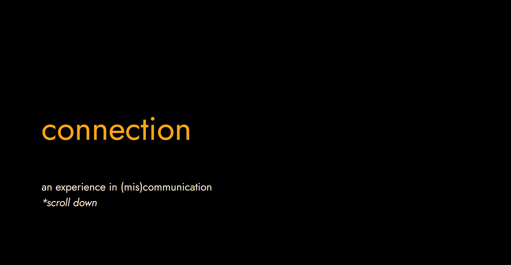
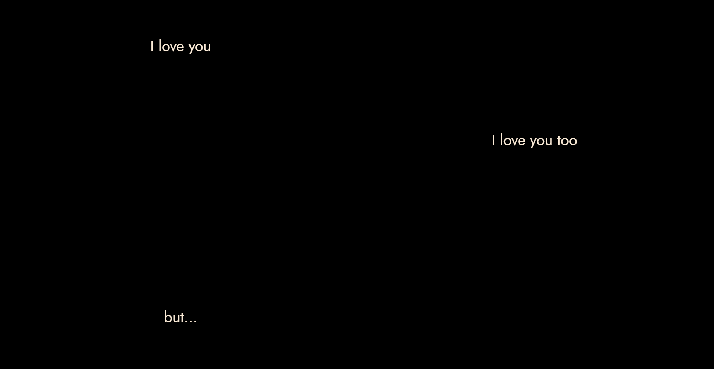
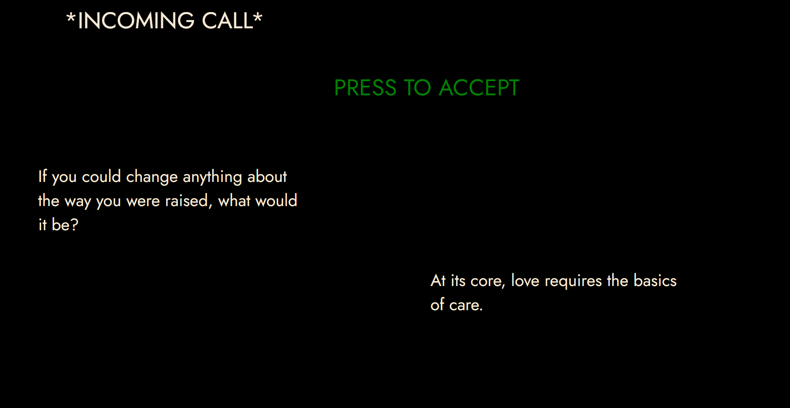
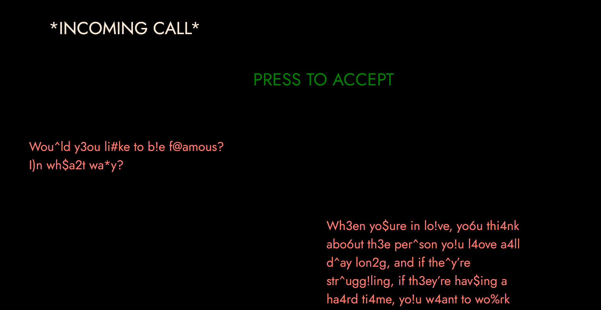

Connection
Project Type: Class, Interaction 2
Mediums: html/css/java
Skills: web design, typography, javascript
This project is a narrative experience based around the idea of "love". As a class we generated a word document filled with media around love,
then individually turned that document into websites. Mine resulted in a narrative piece representing the breakdown of communication in a relationship,
and how an inability to communicate can lead to a breakup. This was represented through randomly generated quotes emulating conversation, which get more and more corrupted as the story goes on. Hover over the video below to see it in action.



See the website here